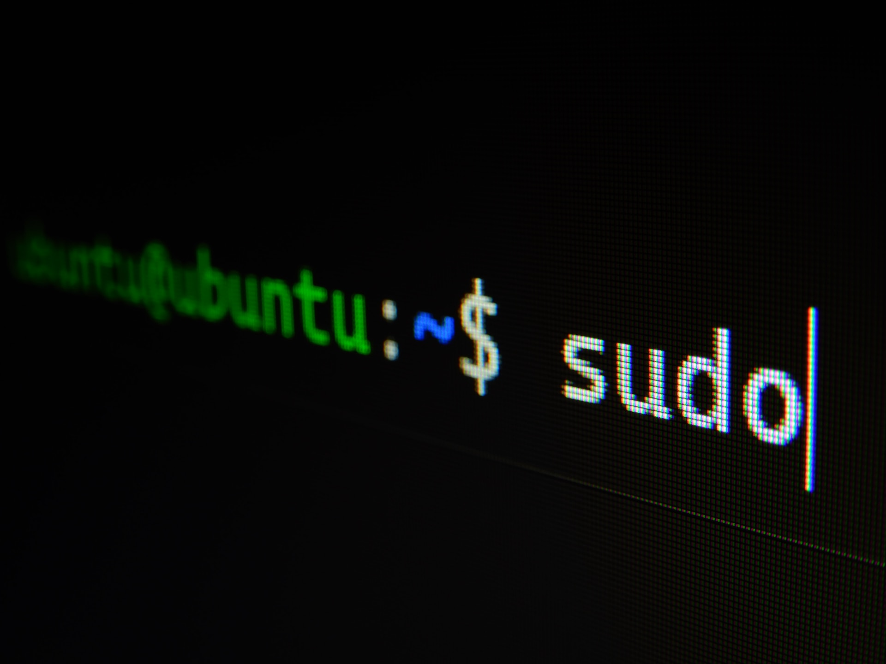
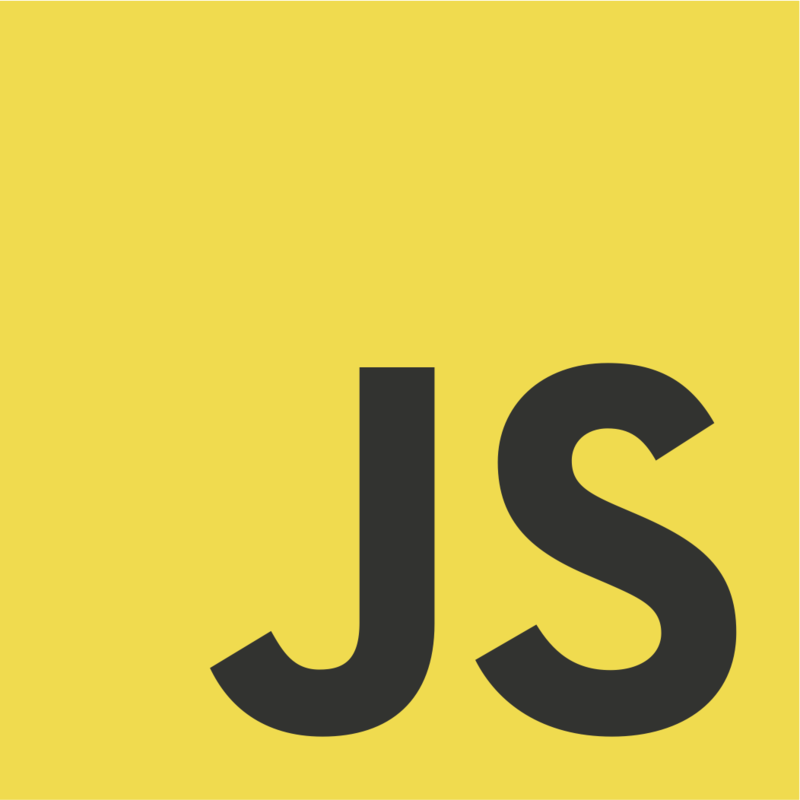

✨ Blog ✨
Extensiones de VSCode que recomiendo
Estas son algunas de las extensiones que, a mi parecer, no deberian de faltarte nunca en tu entorno de desarrollo...
Prettier
Live Server
Error Lens
¿Necesitas imágenes para tu web o proyecto?
Aqui algunas de las mejores páginas de descarga gratuita y de buena calidad...
Unsplash
Undraw
Pexels

Comandos y Alias que más utilizo
Aqui algunos de los Comandos y Alias que mas utilizo a la hora de desarrollar y que seguramente a ti tambien te gustaria conocer...
Ctrl + A
Ctrl + E
Ctrl + R

Operador Spread y Parámetros Rest
En este articulo hablo sobre la importancia de utilizar el operador Spread y Parámetros Rest a la hora de desarrollar, para que se utilizan y algunos ejemplos utiles en donde podrian ser utilizados!
El operador spread, nos permite expandir elementos. Con el rest parameter podíamos transformar una lista de argumentos en un array único, el spread operator nos permite transformar un array en elementos únicos.